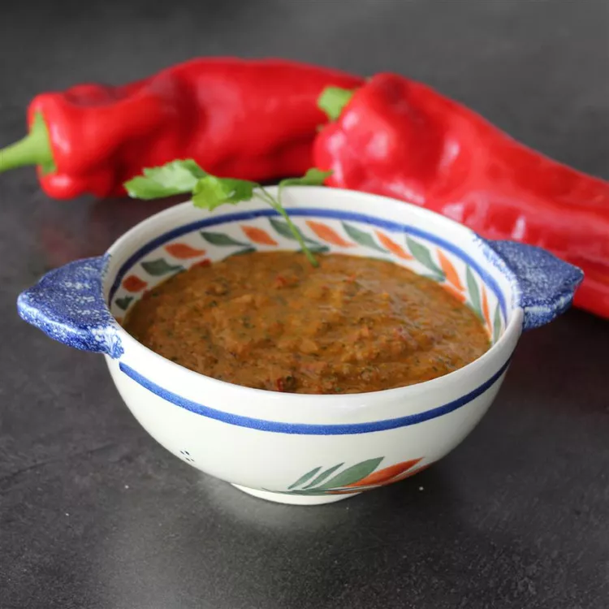

Canary Island - Red Mojo Sauce

Red Mojo Sauce Recipe
Originated in the Canary Islands, this sauce can be used to top potatoes, served with fresh bread rolls, or served
with white gouda cheese or goat cheese cubes. This sauce, whether mild or spicy, is a delightful addition
to any meal. You may add lime juice and or curry for added taste!
Ingredients
- 2 large red bell peppers, cut into chunks
- 2 large red bell peppers, cut into chunks
- 3 cloves garlic
- 1 tablespoon sweet paprika
- 1 bunch fresh cilantro
- 1 cup olive oil
- 1 chile pepper
- 2 slices bread, crusts removed
Instructions
- Blend the bell peppers, garlic, paprika, cilantro, olive oil, chile pepper
- Bread the mix in a blender until liquefied.